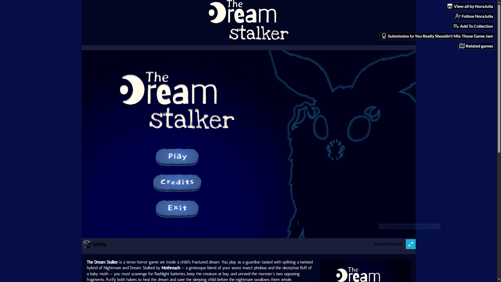
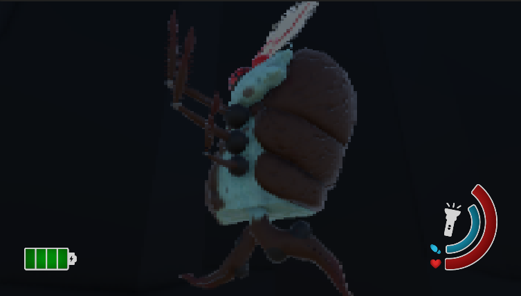
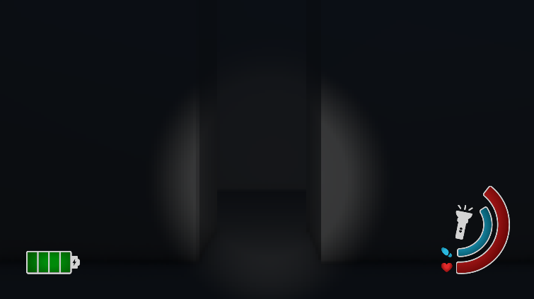
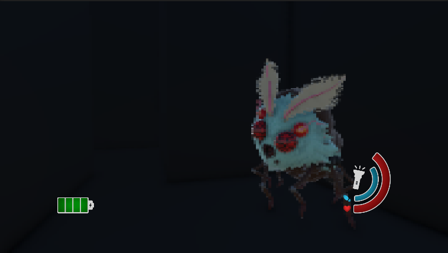
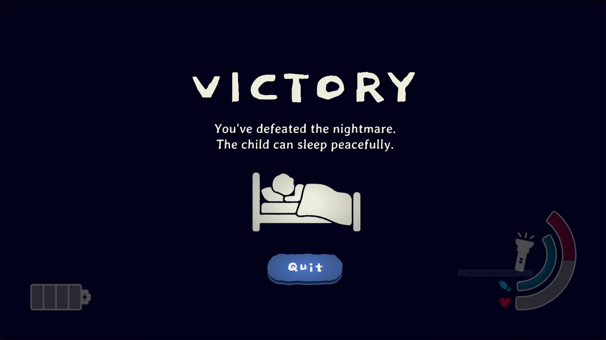
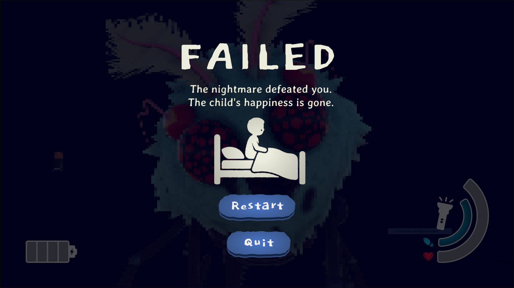
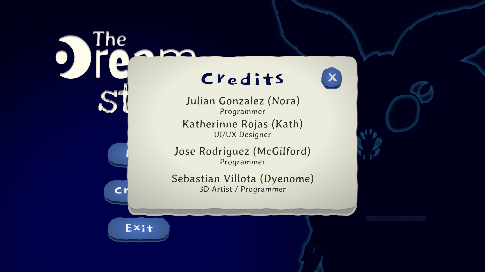

The Dream Stalker
Un juego de terror en primera persona ambientado en el sueño fracturado de un niño: debes purificar dos mitades opuestas de una criatura antes de que la pesadilla lo consuma.
Descripción
The Dream Stalker es un juego de terror en primera persona ambientado dentro del sueño fracturado de un niño. El jugador es un guardián encargado de separar y purificar dos mitades opuestas de una criatura híbrida entre pesadilla y sueño, mientras es acechado por Mothroach: una mezcla entre las fobias más comunes a los insectos y la apariencia engañosamente inofensiva de una polilla bebé.
Para lograrlo hay que recolectar baterías para la linterna y mantener a la criatura a raya mientras se resuelve el misterio de sus dos fragmentos, con el objetivo de sanar el sueño y salvar al niño antes de que la pesadilla lo consuma por completo.
Se desarrolló para la "You Really Shouldn't Mix Those Game Jam" y ya está publicado, disponible para jugar directamente en el navegador (WebGL) a través de itch.io. Está pensado para jugadores de game jams y fans del terror ligero.
Proceso de desarrollo
- Narrativa inicialAntes de entrar en la interfaz, desarrollé la narrativa inicial del proyecto: la premisa del sueño fracturado, la amenaza de Mothroach y el objetivo de separar y purificar ambas mitades de la criatura, sobre la que el equipo construyó el resto del juego.
- El HUD, desde el primer díaDurante los tres primeros días del jam desarrollé el HUD completo y todos sus scripts, mientras el resto del equipo avanzaba en paralelo con el movimiento en primera persona, la linterna y la IA del enemigo (patrullar → perseguir → separar → purificar).
- Menú principalCon el mapa principal y el HUD ya en pie, diseñé e implementé el menú principal del juego.
- Documentación vivaEn paralelo al desarrollo, mantuve actualizado el GDD base en Word, para que el equipo tuviera siempre una referencia clara de las decisiones de diseño a medida que avanzaba el jam.
- Pantallas de victoria y derrotaDiseñé e implementé las pantallas de victoria y derrota, cerrando el ciclo de feedback del jugador.
- Integración final en UnityIntegré todos estos elementos —HUD, menú, pantallas de fin de partida y una ventana de créditos— dentro de Unity mediante scripts, como parte del pulido general del proyecto (efectos de sonido, música y menús).
- Cierre: GDD y pitchEl último día del jam me encargué del diseño final del GDD y del pitch usado para presentar el proyecto, coincidiendo con su publicación el 10 de julio de 2026.
Equipo
- Julian Gonzalez — Programación
- Sebastian Villota — Arte 3D / Programación
- Jose Rodriguez — Programación
- Laura Rojas (yo) — Diseño UI / Documentación
Desafíos y aprendizajes
Mi principal desafío fue desarrollar la interfaz de usuario funcional dentro de Unity. Aunque ya tenía experiencia diseñando interfaces, nunca había implementado una UI completa en Unity con estados de botones, navegación y comportamiento funcional. Para superar este reto investigué la documentación oficial de Unity y me apoyé en diversos tutoriales para comprender las mejores prácticas de implementación. Este proyecto me permitió entender mejor el flujo de trabajo entre diseño e implementación, ampliando mis conocimientos sobre el sistema de UI de Unity.
Herramientas
Habilidades demostradas
Galería






